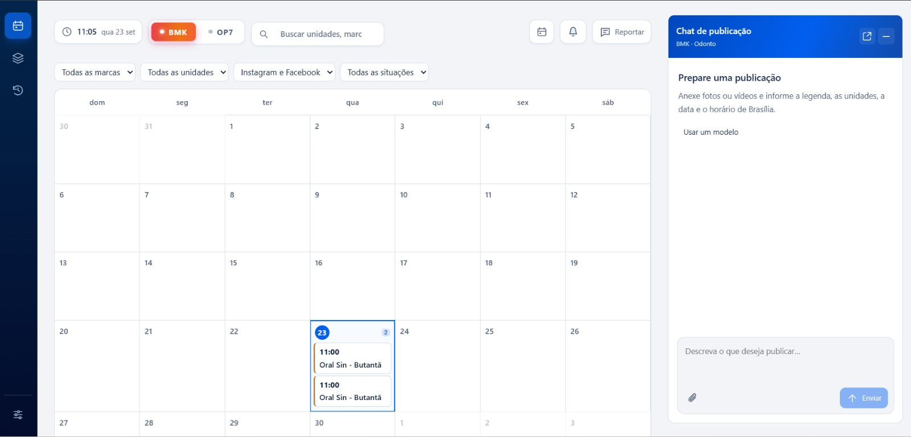
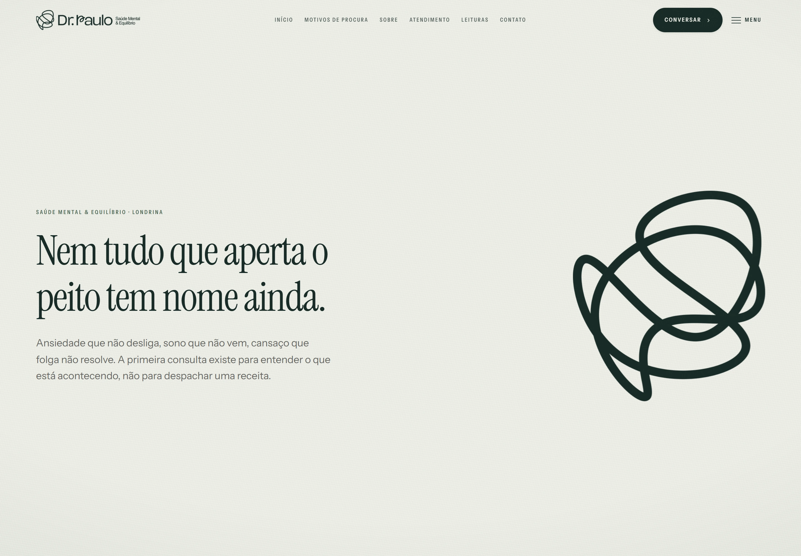

UI / UXDesign & desenvolvimento
Produto digital / Concepção, UI/UX e desenvolvimento full-stack

Site e interface / Interface e desenvolvimento do site

Site e interface / Design de interface e desenvolvimento do site
Landing page / Design e desenvolvimento da página